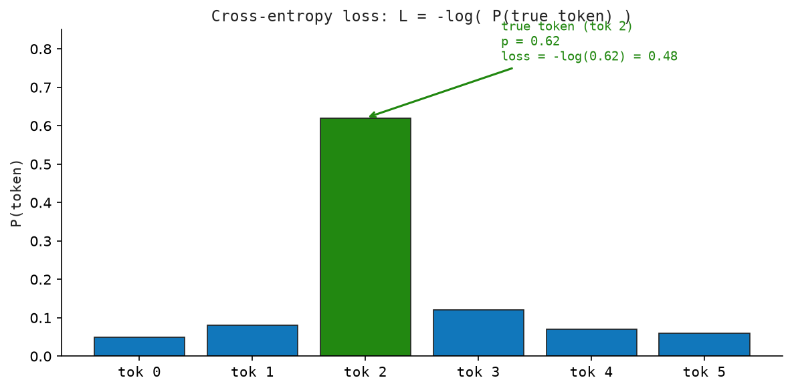

11 Loss — How the Model Learns
“Surprise is the measure of ignorance. To entropize a prediction is to count exactly how many bits you were wrong by.”
— Claude Shannon
So far we have traced the forward pass from end to end. But none of that knowledge was conjured from thin air. The model learned by making predictions, measuring how wrong they were, and nudging every weight in the right direction — billions of times.
This chapter is about that measurement: the loss function.
11.1 The Idea
The model reads a sentence and, at each position, guesses what word comes next. Those guesses are never perfect — but how do we measure how wrong a guess is?
We need a single number that captures “wrongness” in a way that is small when the model is doing well and large when it is doing badly. That number is the loss. And crucially, it needs to be computable from the model’s output so we can use it to improve the model.
Here is the key insight: the model already outputs a probability for every word in the vocabulary. If the true next word is “cat” and the model assigns a 90% probability to “cat,” that is a good prediction — loss should be low. If the model assigns only 1% probability to “cat” (spreading the rest across unrelated words), that is a bad prediction — loss should be high.
The cross-entropy loss formalizes this: it measures how much probability the model assigned to the correct answer. A perfect model assigns 100% to the right word — loss is zero. A confused model spreads probability thinly — loss is high.
11.2 The Problem: Evaluating a Probability Distribution
After the forward pass, the model produces a probability distribution over the vocabulary:
\[ P(\cdot \mid t_1, \ldots, t_t) \in \mathbb{R}^{|V|} \]
We know the true next token \(t_{t+1}\) (because it comes from the training text). The question is: how do we turn “how wrong is this distribution” into a single differentiable number?
The answer is cross-entropy loss.
11.3 Cross-Entropy Loss
11.3.1 The Formula
For a single prediction at position \(t\):
\[ \mathcal{L}(t) = -\log P(t_{t+1} \mid t_1, \ldots, t_t) \]
That’s it. Negative log of the probability assigned to the true next token.
11.3.2 Why Negative Log?
The model outputs a probability \(p \in (0, 1]\). We want a loss that is zero when the prediction is perfect (\(p = 1\)), large when the model is wrong (\(p \to 0\)), and differentiable everywhere.
\(-\log(p)\) delivers all three:
| Predicted probability \(p\) | \(-\log(p)\) | Interpretation |
|---|---|---|
| 1.00 | 0.00 | Perfect |
| 0.80 | 0.22 | Pretty good |
| 0.50 | 0.69 | Random guess |
| 0.10 | 2.30 | Mostly wrong |
| 0.01 | 4.61 | Very wrong |
| 0.001 | 6.91 | Catastrophically wrong |
Math Minute — Logarithms
\(\log(p)\) for \(p \in (0,1]\) is always \(\leq 0\). It passes through \((1, 0)\) and tends to \(-\infty\) as \(p \to 0\). Because we negate it, \(-\log(p) \geq 0\): zero means perfect, large means wrong. All modern ML uses natural log (base \(e\)), so loss is measured in nats. Using base 2 gives bits.
11.3.3 The Full Training Loss
A single document of length \(T\) contributes:
\[ \mathcal{L}_{\text{doc}} = \frac{1}{T} \sum_{t=1}^{T} -\log P(t_{t+1} \mid t_1, \ldots, t_t) \]
11.3.4 Teacher Forcing
Notice the formula conditions on true past tokens, not the model’s own predictions. This is called teacher forcing: during training, we always feed the ground-truth context.
This makes training stable, parallelizable, and simple. The causal mask from Chapter 4 is what enables this — position \(t\) can only attend to positions \(1 \ldots t\), so the model’s prediction at position \(t\) is causally correct even when processing all positions in parallel.
11.3.5 Cross-Entropy as Information Theory
Cross-entropy has deep roots. The cross-entropy between true \(q\) and predicted \(p\) is:
\[ H(q, p) = -\sum_j q_j \log p_j \]
When \(q\) is one-hot, only the true token’s term survives: \(H(q, p) = -\log p_{t_{t+1}}\). Exactly our loss.
Minimizing cross-entropy is equivalent to minimizing the KL divergence between the model’s predictions and the true data distribution. This is why cross-entropy is the natural loss for language models.
11.4 Perplexity
Loss as nats is hard to interpret intuitively. Perplexity converts it to something more concrete:
\[ \text{PPL} = e^{\mathcal{L}} \]
Perplexity is the effective branching factor: on average, how many equally likely choices does the model think there are at each step?
| Loss \(\mathcal{L}\) | Perplexity | Interpretation |
|---|---|---|
| 0.00 | 1.0 | Perfect — only one plausible token |
| 0.69 | 2.0 | Two equally likely tokens |
| 2.30 | 10.0 | Ten equally likely tokens |
| 4.61 | 100 | Random guess over 100 tokens |
| 6.91 | 1000 | Very confused |
GPT-2 (1.5B) reached ~18 perplexity on WikiText-103. GPT-4 is estimated well below 5 on standard benchmarks. Early training starts around 100–1000; loss curves falling to perplexity ~10–20 signals the model has learned real language structure.
Math Minute — Why Exponential?
If a model assigns uniform probability \(1/k\) to each of \(k\) options, the cross-entropy is \(-\log(1/k) = \log k\). Exponentiating: \(e^{\log k} = k\). So perplexity of \(k\) means the model behaves like a uniform distribution over \(k\) choices. Perplexity 1 = model is certain. Perplexity \(|V|\) ≈ 50,000 = model knows nothing.
11.5 The Matrix: Worked Example
Let’s trace the loss for a 4-token sequence ["The", "cat", "sat", "on"] with \(|V| = 5\) (toy vocabulary).
11.5.1 Forward Pass Outputs
The model produces logits at each position. After softmax:
Position 0 (predicting token after "The"):
P = [0.05, 0.10, 0.60, 0.20, 0.05] ← true next = token 3
P(true) = 0.20, loss = -log(0.20) = 1.609
Position 1 (predicting after "The cat"):
P = [0.10, 0.05, 0.15, 0.10, 0.60] ← true next = token 4
P(true) = 0.60, loss = -log(0.60) = 0.511
Position 2 (predicting after "The cat sat"):
P = [0.40, 0.20, 0.15, 0.15, 0.10] ← true next = token 0
P(true) = 0.40, loss = -log(0.40) = 0.916
Position 3 (predicting after "The cat sat on"):
P = [0.05, 0.05, 0.80, 0.05, 0.05] ← true next = token 2
P(true) = 0.80, loss = -log(0.80) = 0.22311.5.2 Total Loss
\[ \mathcal{L} = \frac{1}{4}(1.609 + 0.511 + 0.916 + 0.223) = 0.815 \]
\[ \text{PPL} = e^{0.815} \approx 2.26 \]
The model is effectively choosing between about 2.3 equally likely tokens on average.
Figure Figure 11.1 shows cross-entropy loss as softmax probability followed by the negative log of the true-token probability.

11.6 Python Implementation
cross_entropy_loss computes \(-\log P(\text{true token})\) for a single position.
def cross_entropy_loss(logits: Sequence[float], true_id: int) -> float:
probabilities = softmax(logits)
return -math.log(max(probabilities[true_id], 1.0e-12))sequence_loss averages the per-position losses into one scalar — the training signal for a complete sequence. perplexity converts the mean loss back to an interpretable scale.
def sequence_loss(logits_list: Sequence[Sequence[float]], true_ids: Sequence[int]) -> float:
losses = [cross_entropy_loss(logits, true_id) for logits, true_id in zip(logits_list, true_ids)]
return sum(losses) / len(losses)
# tag::perplexity[]
def perplexity(loss: float) -> float:
return math.exp(loss)
# end::perplexity[]The softmax-cross-entropy gradient has a famously clean closed form: \(\partial \mathcal{L} / \partial z_j = P(j) - \mathbf{1}[j = \text{true}]\).
def softmax_cross_entropy_grad(logits: Sequence[float], true_id: int) -> Vector:
grad = softmax(logits)
grad[true_id] -= 1.0
return gradRun with python3 src/python/chapter_demos.py. Expected output:
Per-position losses:
pos 0 (true=3): loss=1.609 P(true)=0.200
pos 1 (true=4): loss=0.511 P(true)=0.600
pos 2 (true=0): loss=0.916 P(true)=0.400
pos 3 (true=2): loss=0.223 P(true)=0.800
Mean loss: 0.815
Perplexity: 2.2611.7 Key Takeaways
- Cross-entropy loss is \(-\log P(\text{true next token})\). Zero when perfect, unbounded when wrong.
- Teacher forcing feeds ground-truth context at training time, enabling full parallelism via causal masking.
- Perplexity \(= e^{\mathcal{L}}\) is the effective branching factor — more intuitive than raw nats.
- The softmax-CE gradient is \(P(j) - \mathbf{1}[j = t_{t+1}]\): a closed-form, numerically stable backprop step.
- Cross-entropy = KL divergence (since labels are one-hot), so training minimizes the KL from model predictions to the true data distribution.
- The loss is the single signal that shapes every weight: embeddings, attention projections, FFN weights, layer norms — all updated from this one number per token.
What’s next? Chapter 9 gave us a loss: a single number measuring how wrong the model is. But knowing how wrong we are is only half the battle. We also need to know which weights are responsible for the error, and by how much to change each one. That is the job of training — Chapter 10.